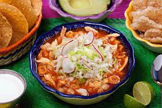

Pozole
Caldo espesado con chile pasilla y otra bariedades de chiles rojos, crarne de puerco y grano de maiz, acompañado con verduras, rabano,cilantro, lechuga y cebolla morada o blanca, como acompañante totopos y limón
Chimichangas

Tortilla de harina rellena de papa cocida con carne desmenuzada, posteriormente dorada en el aceite y servida con verdurar picadas como, lechuga, cebolla morada curtida, pepino, tambien acompañada con consome y queso fresco, al gusto se prepara con aguacate, mediacrema y salsa de su elección
Salpicón
Carne cocida y desmenuzada, mesclada con verduras picadas, tomate, cebolla, lechuga, zanahoria, pepino y jugo de limón, serbida en una tostada con una cama de frijol refrito, con queso fresco, mediacrema y salsa.